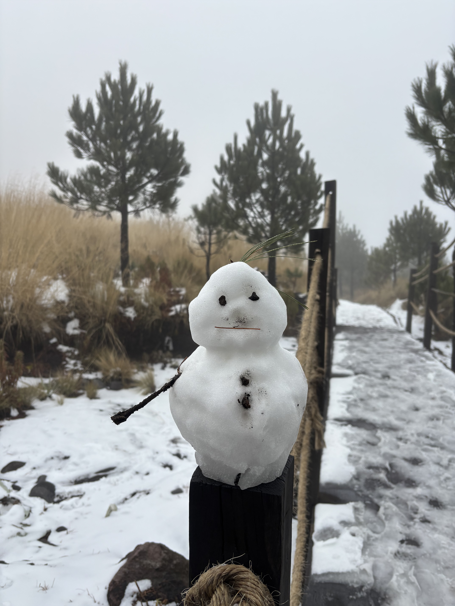
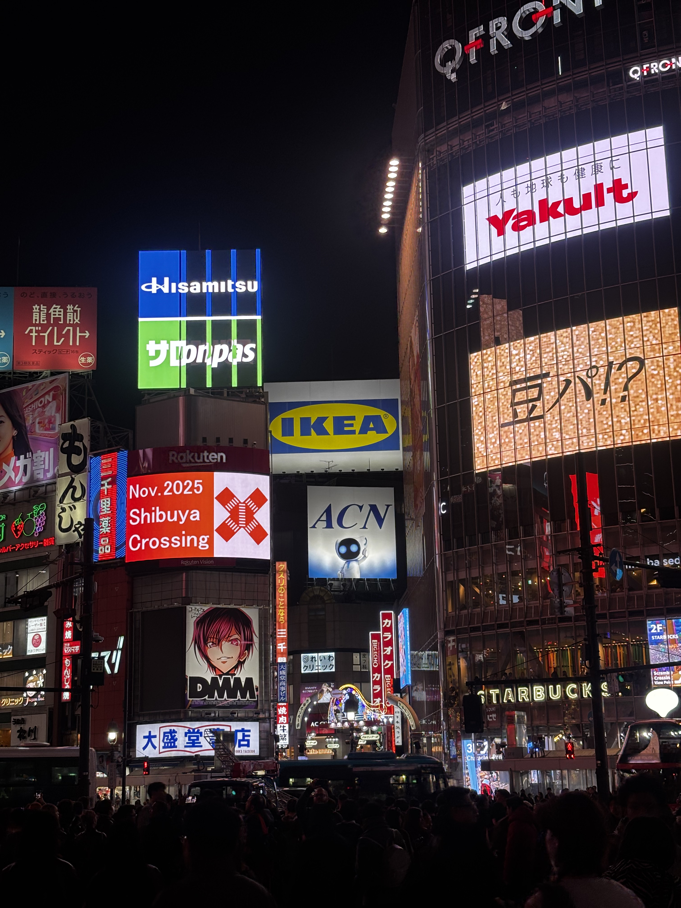
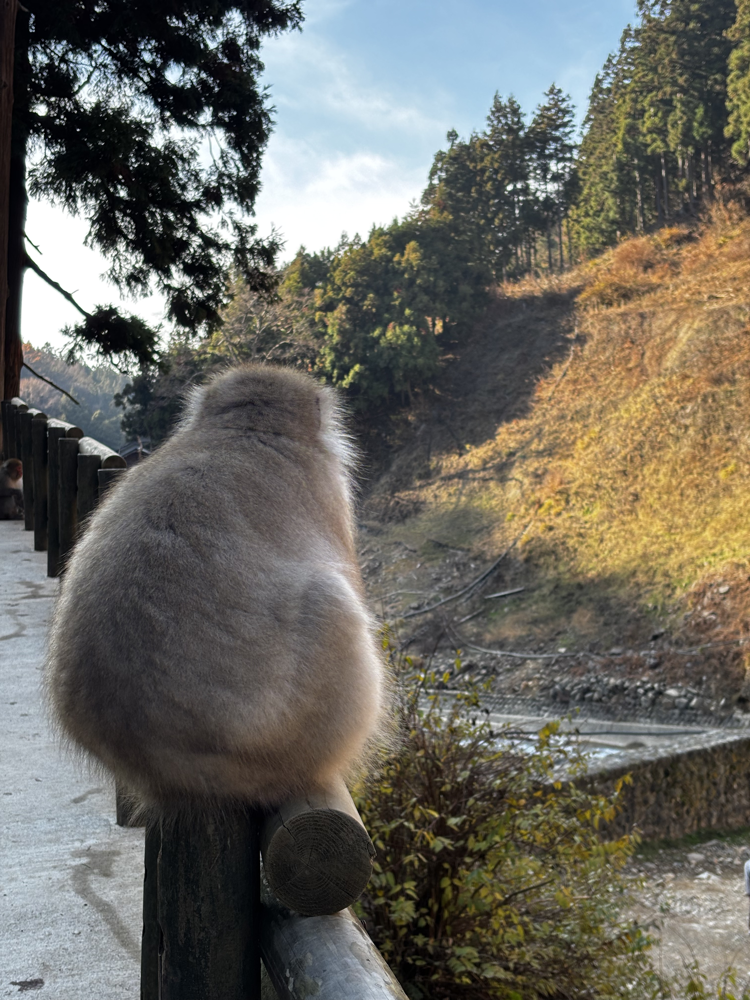
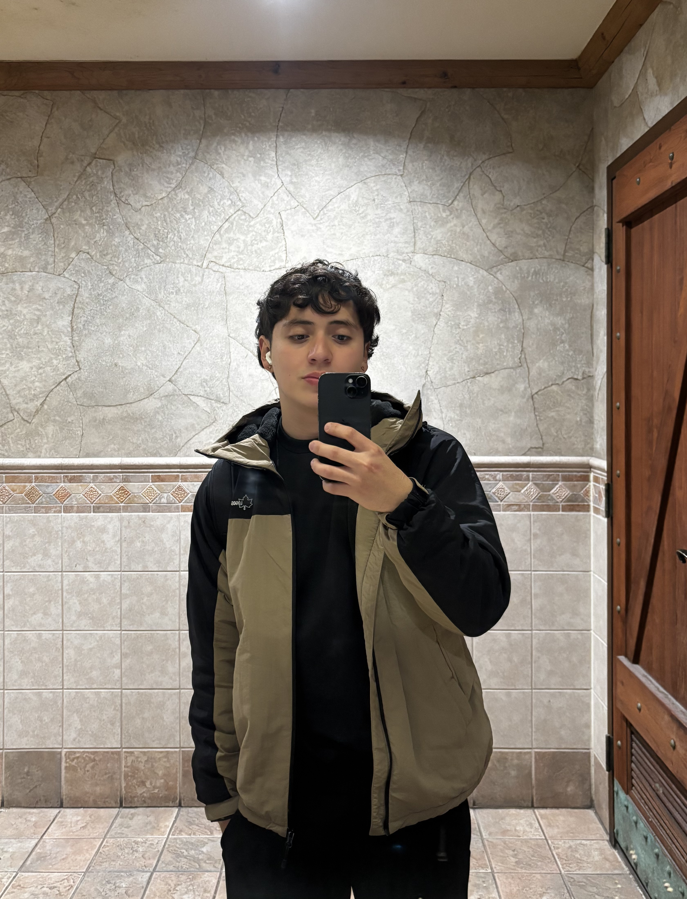

Some of my favorite picture





Who am I? I am a 22-year-old who is friendly and always eager to learn as much as possible, because I believe that learning helps improve social relationships through tolerance and respect. I am affectionate and I value the small things that make life meaningful and interesting. I constantly try to become a better person through exercise, studying, reading, and meditation, even though I have only recently started practicing the latter. Above all, I want to be my own hero in life instead of placing that responsibility on someone else.
What do I like? I have loved listening to music, especially R&B and Pop, since I was a child. I also enjoy practicing as many sports as I can, because I am a big sports enthusiast. I like watching series and movies, especially the ones that have many seasons or are long, since I prefer long stories over short ones. My favorite genre is thriller. Ever since I learned English, I have wanted to learn French and Mandarin as well, and I already know the basics of Mandarin. Finally, one thing I truly love is beautiful landscapes, because they make me feel alive.


